Building a website from scratch using Figma, HTML and CSS.
For this project I had to design and then code a website which best expressed my own interests and personality. It was a 3 months long journey through which I grew my knowledge on the reality of transferring the design into code.
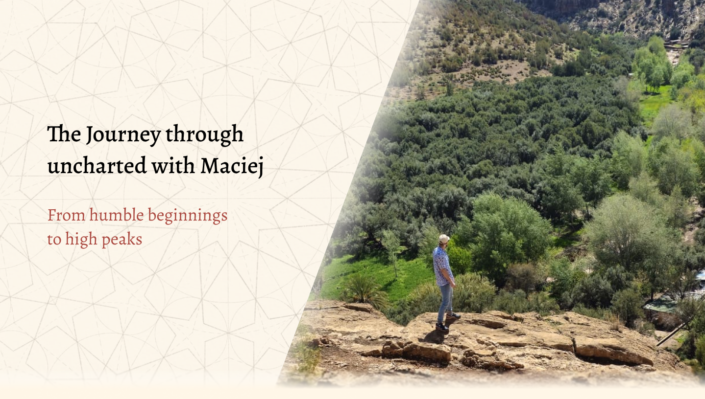
When working on this project I thought of how I could combine the idea of a simple travel blog website with the aesthetics of an old vintage map,and a manuscript found in the desert. Before proceeding with any design I first did some little moodboarding. Just enough to get some inspiration and be able to sample some basic colors. Besides old maps and manuscripts I also looked at the design used in the interface of ‘’Assassin's Creed Mirage’’ since that game's designs were exactly like what I was going for aesthetically.
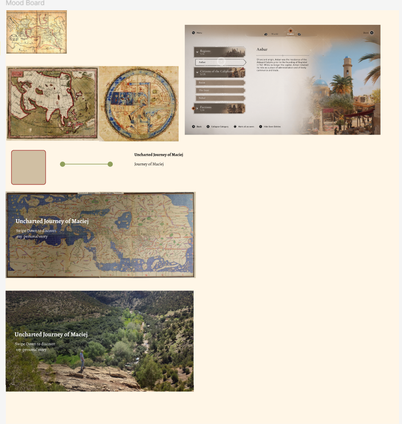
Next up I did some low and mid fidelity designs of the main page, just to figure out the layout and grids without having to yet worry too much about the content, colors and animations. I used 5 columns with a margin of 70px and the gutter at 20px. I was going for a clean, somewhat minimalistic layout of a travel blog here.
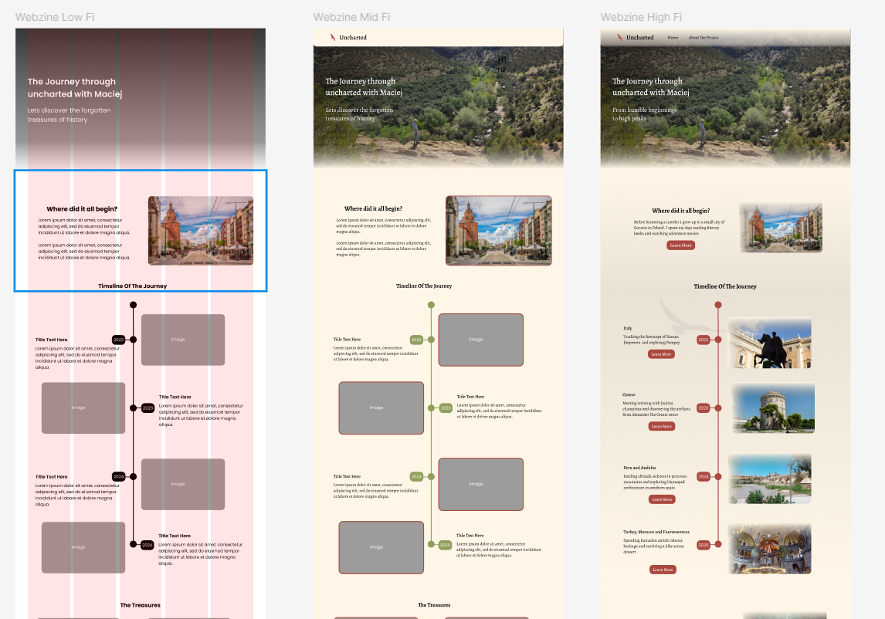
As for the typography I had quite a few fonts on my mind but ultimately I ended up with Alegreya. This font with its serif style edges gives that classical look, but at the same time its subtle roundness gives a subtle feel of a youthful playful adventure.
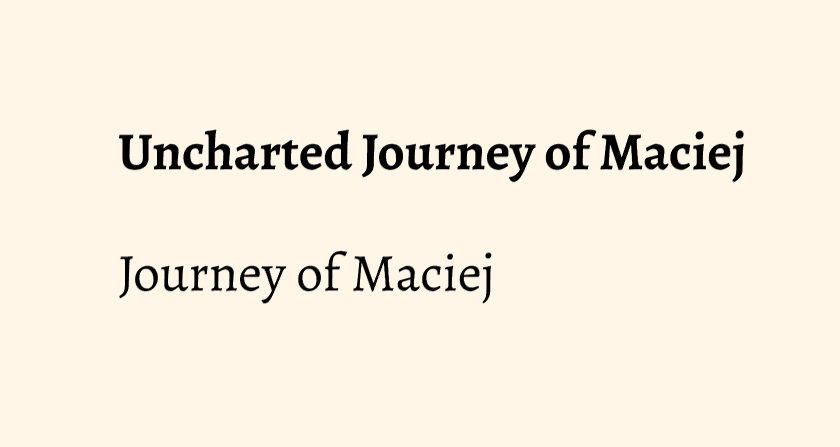
The color palette is very simple all throughout my webzine, 60% of it is a sandy beige for the background and navigation bar (although with a gradient at lower opacity) and also for the soft low opacity edges that can be seen on pictures and in the hero sections. This design is meant to simulate in a way the look of an old map, or a manuscript found in the sand, where most of it might be uncovered, but there's still some sand over the edges.
A color which is the 30% of the design is a mix of beige and brown, however I didn't use an actual color from ‘’fill’’ on figma or ‘’background color’’ in css, but rather I used a ready made component ,from one of my classmates, of an old paper texture and set it at a lower opacity of 50%. Here I wanted this to be used behind the majority of the text found in the webzine to make it look like an actual note or manuscript.
The color that makes up the remaining 10% is a dark red, which is a color I found on the vintage map being used as an accent color for routes, and hence I sampled it and used it for accent as well. It's found in my webzine in some of the text and hover animations as well as the logo and icons.
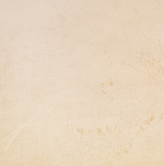
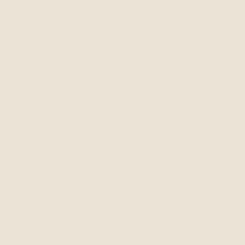
Initially the layout of the ‘’timeline of the journey” section had an actual timeline with photos and description on opposing sides. However I wanted to find a way to make it more interactive and give the user more of that ‘’digging out’’ manuscript from sand feel. Hence I came up with the hover cards where at first you only see pictures of locations and after hover the description appears. I reused that design and code for those cards all throughout the webzine for the ‘’highlights sections’’ of the pages.
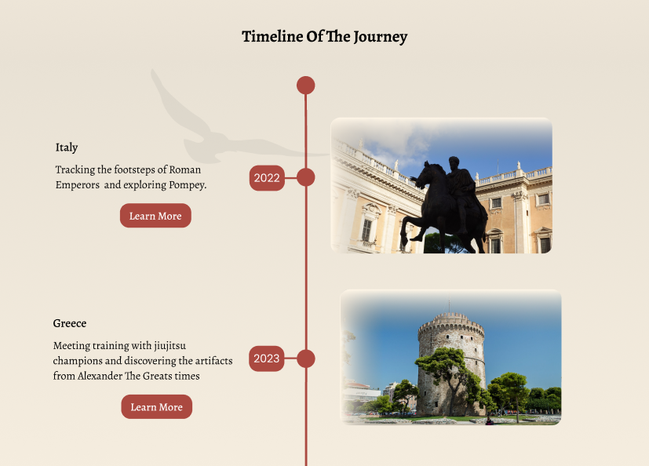
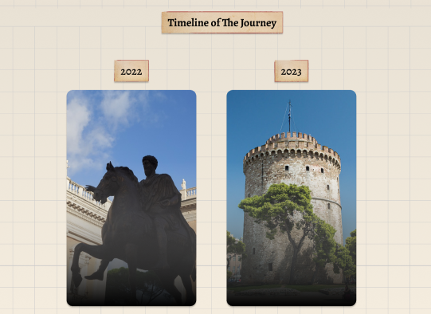
Changes were also made in the initial layout of the main page’s learn more tables. At first I had dark red buttons with hover animations below, but I quickly found it boring and quite frankly difficult to arrange for it to match the text above nicely especially in the CSS. Hence I took inspiration from Assassin's Creed Mirage official website and noticed a nice hover animation with an arrow moving to the right as you hover your cursor over it, I applied the same effect to my webzine. It is supposed to give the user the feel of the line show them the path on a map.
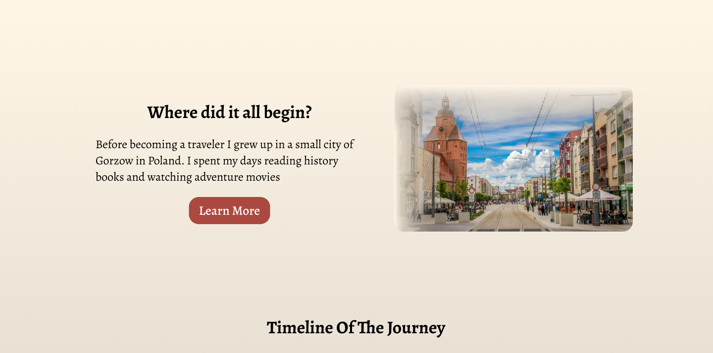
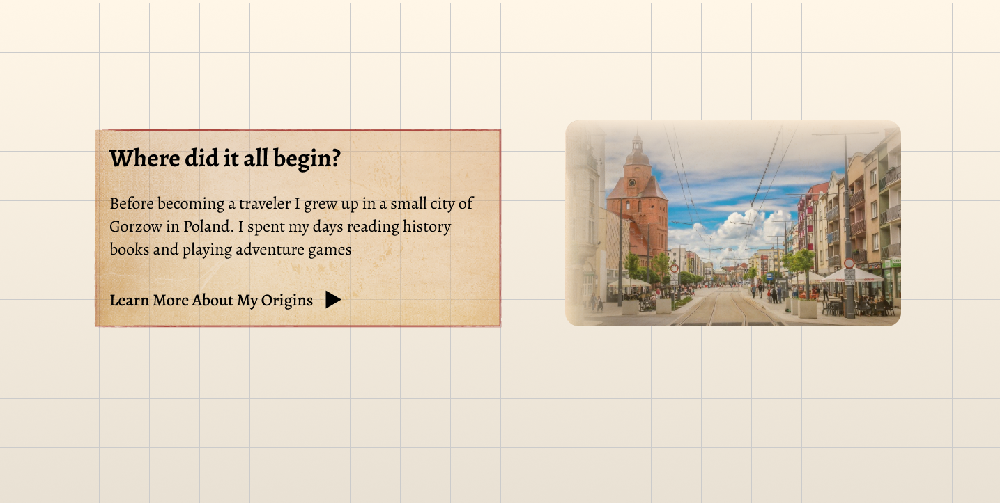
In my original Figma design, the background had only a static notebook-style grid. In the coded version, I improved this by adding gently moving dust particles to bring the feeling of an old, dusty library. Because Figma has limited support for motion, I implemented this effect directly in the browser with JavaScript, using generative AI to speed up the more advanced parts of the scripting. The result is a subtle animated background that brings the portfolio to life without distracting from the content.
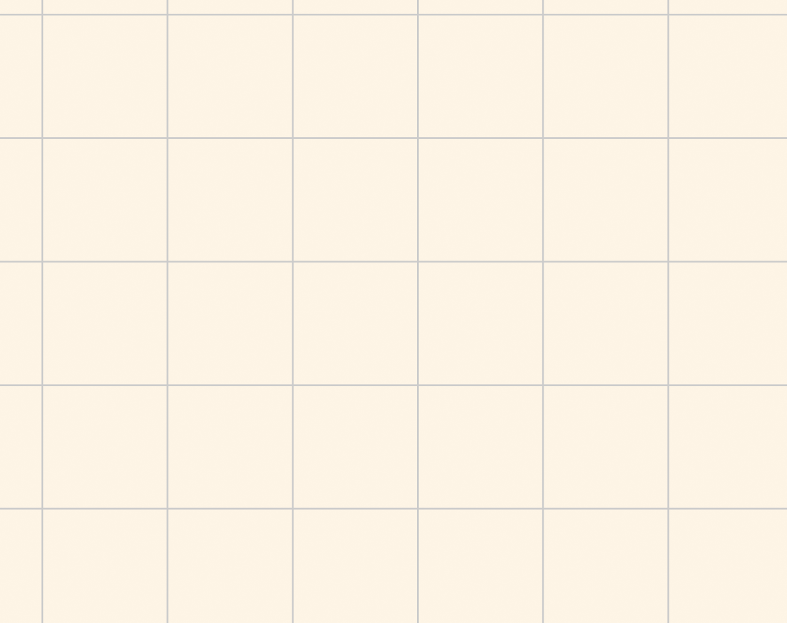
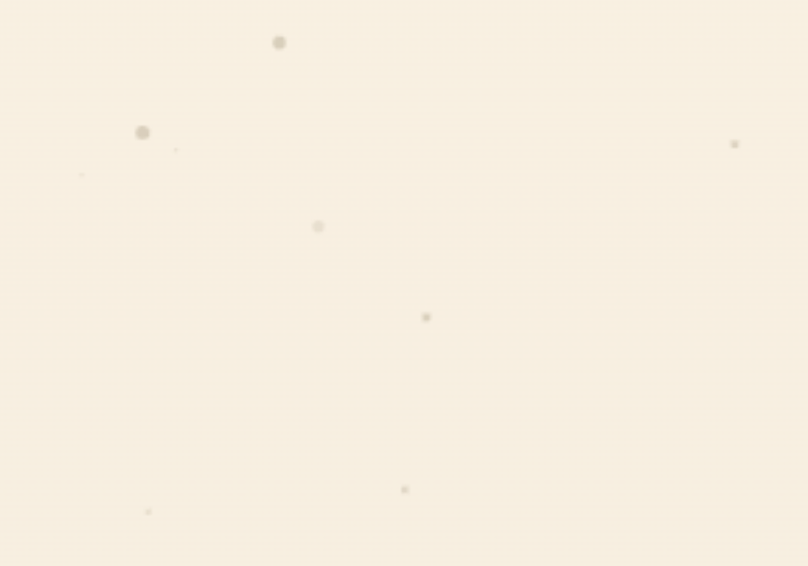
Despite the initial challenges, this project ended up being a valuable learning experience that helped me grow as a designer and developer. I finally got to see first hand how the transition from design to development isn't always straightforward, and that there will always be differences between the design and the final implementation. However, I learned to look at those changes not as failures but rather as part of the design process.